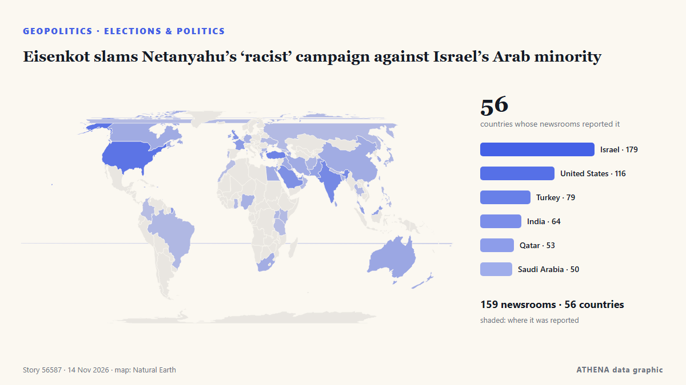

Εκλογές & πολιτική
ΧορηγούμενοΠαρουσιάζεται από  Cybernetics and Artificial Intelligence Lab Welcome to the Cybernetics and Artificial Intelligence Laboratory, established at the Department of Business Administration of the National and Kapodistrian University of Athens. The lab is headed by Professor Dimitrios Thomakos. The lab aims to do research that can be published in top venues. Our research uses tools and methods of Artificial Intelligence, and lies in the following areas: - Forecasting - Decision making - Cyber security - Finance We are always looking forward to collaborating with exceptional students!
Cybernetics and Artificial Intelligence Lab Welcome to the Cybernetics and Artificial Intelligence Laboratory, established at the Department of Business Administration of the National and Kapodistrian University of Athens. The lab is headed by Professor Dimitrios Thomakos. The lab aims to do research that can be published in top venues. Our research uses tools and methods of Artificial Intelligence, and lies in the following areas: - Forecasting - Decision making - Cyber security - Finance We are always looking forward to collaborating with exceptional students!
| 1 Νοε | 1 |
|---|---|
| 2 Νοε | 0 |
| 3 Νοε | 1 |
| 4 Νοε | 1 |
| 5 Νοε | 0 |
| 6 Νοε | 0 |
| 7 Νοε | 0 |
| 8 Νοε | 0 |
| 9 Νοε | 2 |
| 10 Νοε | 4 |
| 11 Νοε | 5 |
| 12 Νοε | 4 |
| 13 Νοε | 2 |
| 14 Νοε | 0 |
Οι τίτλοι των ειδήσεων παρουσιάζονται στα αγγλικά, όπως δημοσιεύτηκαν.

Eisenkot slams Netanyahu’s ‘racist’ campaign against Israel’s Arab minority
Former deputy governor tells Central Banking prime minister’s proposals are ‘stupid’ and ‘crazy’ από Central Banking
Trump says Gulf allies urged restraint on Iran, admits war hurt Republicans in midterms
With the political constraints imposed by the US midterm elections lifted, Donald Trump may become more erratic and unpredictable. από The Scotsman
As election nears, Spain’s Sanchez struggles to rally disillusioned left
MADRID, Nov 13 - When Spain's Prime Minister Pedro Sanchez called a snap election last month, he was betting that anger over housing and fear of the far right would rally all shades of the left… από The Straits Times
France criticises ‘demagogic’ move by Israel to ban hard-left leader Melenchon
PARIS, Nov 13 - France has criticised as \"demagogic\" a decision by Israel to ban French hard-left presidential candidate Jean-Luc Melenchonand another leading figure in his France Unbowed (La… από The Straits Times
Scott Colom, a Democrat, wins Mississippi Senate seat in historic upset
On “Forbes Newsroom,” NAACP President Derrick Johnson discussed the still-unresolved Mississippi Senate race in which Democrat Scott Colom is up by about 2500 against Rpublican incumbent Cindy… από Forbes Business
Abdul El-Sayed on Democratic leadership, health care access and inspiring a new generation
With New Hampshire and Georgia staying in Democratic hands, Republicans now look to Michigan for a pickup, where Democrat Abdul El-Sayed is competing with Republican Mike Rogers. από France 24 English
Meet the members sworn in to Israel's 26th Knesset
The new Knesset includes 120 lawmakers from 11 party lists. από Haaretz (English)
Mississippi Democrat flips US Senate seat in stunning upset
Hiram Revels is first Black senator the United States ever elected. από Express Tribune
With US midterms underway, courts rebuff Trump's pressure on state election officials
Federal judges have repeatedly rejected the Trump administration's efforts to wrest control over state voting processes and intimidate state and local elections officials. από Los Angeles Times (World)
Van Hollen to challenge Schumer for Senate Democratic leader, saying voters ‘called for change’
Senator Chris Van Hollen has announced his candidacy for Senate Majority Leader, challenging incumbent Chuck Schumer. από Arab News
Kenya: Ruto Opens Door to EU Election Observers Ahead of 2027 Polls
[Capital FM] Nairobi -- President William Ruto has signalled Kenya's willingness to host European Union election observers during the August 2027 General Election, as pressure mounts for credible and… από AllAfrica
Turnbull hits back after Khawaja’s claims he played politics in sandpapergate
Khawaja took aim at the former prime minister in his newly released autobiography, which has thrust the 2018 ball-tampering affair back in the limelight. από Sydney Morning Herald
Democratic leader Hakeem Jeffries announces bid for US House speaker
'I write to humbly request your support in connection with my candidacy to serve as the next Speaker of the House of Representatives,' says Jeffries in letter. από Anadolu Agency (English)
European Parliament calls for Russia's actions against Ukrainian children to be recognised as genocide
The European Parliament has urged EU countries to recognise Russia's deportation of Ukrainian children as genocide, stressing that their return must not be used as a bargaining chip in peace talks. από Ukrainska Pravda (English)
Spanish parliament passes housing measures after general strike
The eviction of 87-year-old Madrid pensioner Maricarmen Abascal from her lifelong home in September, and her subsequent death, sparked national uproar. από Le Monde (English)
US midterms put pro-Israel powerhouse AIPAC on defensive
For years, the pro-Israel lobbying group AIPAC was a US political juggernaut, but deepening voter disillusion over US-Israeli ties and wins by openly Israel-skeptic candidates in last week's midterm… από Al-Monitor
US Republicans elect Jim Jordan as House minority leader
Jordan defeats outgoing House Majority Leader Steve Scalise in closed-door election in 106-73 vote. από Anadolu Agency (English)
Andy Burnham says government will unveil 10-year plan by mid-December
Prime minister tells Kemi Badenoch at PMQs that flagship strategy will be revealed before Commons Christmas recess The government’s 10-year plan will emerge by mid-December, Andy Burnham has told… από The Guardian
A week after huge election losses, Republicans to choose their leaders in Congress
WASHINGTON: One week after the massive election defeat that repudiated their fealty to President Donald Trump, Republicans in the US Congress were set on Tuesday to decide who w... από Oman Observer